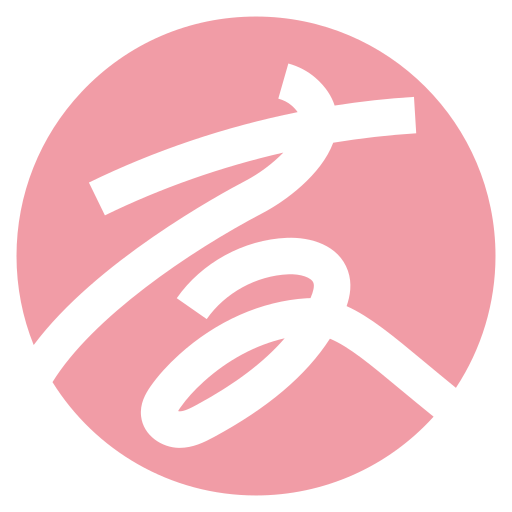
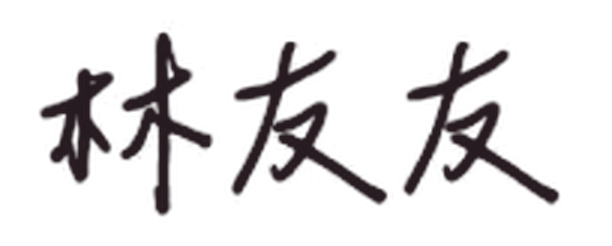

01
完善長照 打造高齡友善環境
整合長照、健康與社區照顧資源，簡化長照申請流程， 讓草屯、中寮的長輩獲得更便利、更安心的照顧， 也減輕家庭照顧負擔。

草屯與中寮，各有自己的生活樣貌。未來的規劃， 需要走進不同的村里，聽見需求，再把地方經驗帶進政策討論。
從一件陳情的處理，到一項公共政策的推動， 都要把問題問清楚、把方法想具體，也把後續進度交代明白。

從健康與運動、教育與文化、工作與生活等每天感受得到的需求出發， 持續關注長照、婦幼、青年、地方產業與區域發展。
整合長照、健康與社區照顧資源，簡化長照申請流程， 讓草屯、中寮的長輩獲得更便利、更安心的照顧， 也減輕家庭照顧負擔。
廣設托育資源，減輕育兒負擔，持續關注婦女權益、 月經平權及弱勢與特殊境遇家庭， 建立更完整的家庭支持與照顧網絡。
串聯就業、創業、數位學習與創客資源， 鼓勵青年留鄉、返鄉發展，推動青銀共生， 讓年輕人在地方有更多參與及發揮的機會。
支持學校教育、在地藝術家及藝文團隊， 推廣藝文展演與文化活動，保存草屯、中寮的地方故事、 技藝與特色，讓在地文化持續傳承。
爭取草屯建置完善的匹克球場及運動空間， 提供安全、友善的運動環境，推廣全民運動， 鼓勵青銀世代共同參與，打造草屯新的休閒運動據點。
推動東草屯交流道周邊整體規劃， 完善人行道、自行車道及交通環境， 並結合地方產業、觀光與生活機能， 在兼顧居民需求及環境品質下，帶動地方穩健發展。
跟隨友友的腳步，看見草屯・中寮的改變
從校園安全、通學環境到運動建設與地方行腳， 用影像留下每一次關心、質詢與行動。